Today's dossier / 22.07.2026
The AI-agent builder that runs a stranger's code: CVE-2026-0770 in Langflow
Langflow is a visual tool for building flows and agents on top of language models. The function meant to «validate» user-supplied code, validate_code(), instead passes it to exec() with no sandbox: CVE-2026-0770 lets an unauthenticated attacker run arbitrary commands on the server. CVSS 9.8. Added to the CISA KEV catalog on 21 July 2026, with public proof-of-concept code already available. Patch now and keep instances off the public internet.

The project
Every day, one real cyber attack told in full: where it came from, how it unfolded step by step, how you detect it and how you stop it. Every technique is mapped to MITRE ATT&CK and every claim rests on primary sources — agency advisories and reports from the people who ran the incident response. Where sources are uncertain, we say so.
Archive
30 dossiers
The heart of WordPress, run by someone who never logged in: the WP2Shell chain
WordPress runs a huge share of the public web. Two flaws in its core — a SQL injection in WP_Query (CVE-2026-60137) and a REST API batch-route confusi…
Unattributed · opportunistic mass exploitation (public PoCs) · critical
Continue reading →
Qilin claims Danone: what the source says, and what remains to be verified
The Qilin ransomware group listed Danone on its leak site, claiming it stole roughly 221 GB of data and publishing more than 90,000 files. The claim, …
Qilin (Agenda) — leak-site claim, not confirmed by the victim · high
Continue reading →
Your boss's voice can be fake: social engineering in the age of AI
Social engineering remains the most-used way in, and AI has made it cheaper and more convincing: voice cloning can mimic an executive's voice fro…
Editorial explainer · official sources (ENISA) · medium
Continue reading →
DORA, one year on: what it really requires of finance, and why it reaches IT suppliers too
Not an attack, but the resilience framework the European financial sector must hold up under when incidents hit. Regulation (EU) 2022/2554 — DORA, the…
Editorial explainer · official sources · medium
Continue reading →
Wind Tre, €1.7M from the Italian DPA: when the flaw isn't an exploit but a clerk talked into it
Italy's data protection authority (the Garante) fined Wind Tre €1,715,600 for serious shortcomings in system security. According to the authority…
Editorial explainer · Italian DPA (Garante) decision · medium
Continue reading →
Phishing-resistant MFA: why not all second factors are equal
Multi-factor authentication is the most-cited defense against credential theft, but "MFA" is not a uniform category. SMS and push notificati…
Editorial explainer · official sources (NIST, CISA) · medium
Continue reading →
Four Joomla extensions, one pattern: the unauthenticated-upload wave that plants ghost admins
In a few weeks four widely installed Joomla extensions — SP Page Builder, iCagenda, PageBuilder CK and Balbooa Forms — landed in CISA's catalog o…
Unattributed (no named actor or campaign; disclosure by Phil Taylor / mySites.guru) · critical
Continue reading →
The module that moves the payments, taken without a login: CVE-2026-46817 in Oracle E-Business Suite
Oracle Payments is the payment engine inside Oracle E-Business Suite: the point where the company's finance applications talk to banks and card n…
Unattributed (first observed on Defused honeypots; no public campaign or actor) · critical
Continue reading →
A token nobody signed: SimpleHelp accepted forged logins and opened every managed endpoint
SimpleHelp is remote-support software: whoever controls it controls the computers it manages. CVE-2026-48558 (CVSS 10.0) is an authentication bypass i…
Access unattributed; post-exploitation with TaskWeaver loader and Djinn stealer (Blackpoint Cyber) · critical
Continue reading →
How to break the ransomware-as-a-service model: what the official sources actually say
Ransomware today is a service industry, not a lone wolf: operators who rent the malware, affiliates who strike, brokers who sell the initial access. T…
Editorial explainer · official sources · high
Continue reading →
Cyber Resilience Act: what kicks in on 11 September 2026, and what waits for 2027
Not an attack, but a deadline drawing closer. The Cyber Resilience Act — Regulation (EU) 2024/2847 — has been in force since 10 December 2024, but its…
Editorial explainer · official sources · medium
Continue reading →
The 72-hour rule, explained properly: what the GDPR actually requires after a breach
"You have 72 hours to notify" is the line everyone repeats and few explain. This explainer lines up what the GDPR actually says: when the cl…
Editorial explainer · official sources · medium
Continue reading →
The human factor is not the weak link: why blame doesn't stop phishing
Social engineering is among the prime threats in the Union according to ENISA, yet the most common reaction stays the worst: blame whoever clicked. Th…
Editorial explainer · official sources · medium
Continue reading →
NIS2 in Italy: who is really in scope, since when, and why it reaches suppliers too
Not an attack, but the perimeter within which attacks are managed. The NIS2 directive was transposed in Italy by Legislative Decree 138/2024, in force…
Editorial explainer · official sources · medium
Continue reading →
The box built to run malware, run by whoever knocks: two RCEs in FortiSandbox
FortiSandbox is the box where suspicious files are detonated safely. Two unauthenticated OS command injection flaws — one in the WEB UI, one in an API…
Unattributed (no public campaign; exploitation flagged by CISA) · critical
Continue reading →
SonicWall SMA1000: you patch, you reset the passwords, and they are still in
Two zero-days in SonicWall SMA1000 remote-access appliances, chained and exploited before disclosure. The first is an unauthenticated SSRF with a maxi…
Unattributed (infrastructure behind a VPN provider) · critical
Continue reading →
No malware, no ransom, no patch: the KNXlock case
On 15 July 2026 CISA added to the KEV catalog a 2023 CVE describing a 2021 attack. There is no malicious code: the attackers purge a building's K…
Unknown — no attribution, no ransom demand · high
Continue reading →
FortiBleed: there is no patch, because there is no vulnerability
Roughly half of all internet-facing Fortinet firewalls have their admin credentials in the hands of an access broker. There is no CVE to patch: there …
Russian-speaking Initial Access Broker (unconfirmed) · high
Continue reading →
The thirty-euro router that wiretapped foreign ministries
APT28 turned thousands of home routers into a wiretapping network aimed at foreign ministries and law enforcement, hijacking DNS to steal already-auth…
APT28 · critical
Continue reading →
Axios: the manifest, the RAT, and the token nobody revoked
On 31 March 2026 two malicious axios releases added a booby-trapped dependency without touching a single line of source code. npm had rolled out OIDC …
Unattributed actor · critical
Continue reading →
Medusa and UMMC: The Clinic That Learned to Run Offline
On 19 February 2026 Mississippi's largest health system went dark: 35 clinical sites shut, the state's only Level I trauma center paralysed.…
Medusa · critical
Continue reading →
Qilin and the Interest on Technical Debt: Logging Into a VPN Without a Password
A logic flaw in certificate validation during the IKEv1 key exchange let attackers open an authenticated Check Point VPN session without knowing any p…
Qilin · critical
Continue reading →
The SIEM that never asked for a password
CVSS 9.8, pre-auth, RCE. The flaw isn't in Splunk proper but in an internal PostgreSQL component that accepts whatever credential you hand it. A …
Unattributed · critical
Continue reading →
Two Attackers, One Network: Storm-2603 and the End of the Single Intrusion
Storm-2603 abuses an authentication bypass in SmarterMail to install Velociraptor as a C2 and stage Warlock ransomware. But the detail that matters su…
Storm-2603 · critical
Continue reading →
Volt Typhoon stopped watching. Now it's looking for the stop button
For five years Volt Typhoon hid inside US critical infrastructure and touched nothing. In 2026 Dragos catches it manipulating engineering workstations…
Volt Typhoon · critical
Continue reading →
Interlock: the ransomware that walks in the front door
Interlock flipped the ransomware script: no phishing, no breached VPN. The victim visits a legitimate compromised site, sees a fake CAPTCHA, and paste…
Interlock · high
Continue reading →
The QR code that steals your session, not your password
Kimsuky stopped fighting corporate email filters. It simply changed channel: a QR code forces the victim onto a personal phone, outside the IT perimet…
Kimsuky · high
Continue reading →
Miasma: valid SLSA provenance for malicious packages
Thirty-two Red Hat npm packages were published with malicious payloads — carrying valid SLSA provenance attestations. The technology built to guarante…
TeamPCP (derived tooling) · high
Continue reading →
"Exploitation Less Likely", then three days to patch
Microsoft rated it "Exploitation Less Likely". Five weeks later CISA put it in the KEV catalog with a three-day remediation window. A lesson…
Unattributed · high
Continue reading →TikTok
Every dossier becomes a video
Sixty seconds to understand a real attack, sources in the caption.